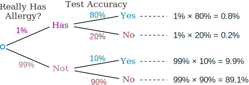

False Positives and False Negatives
Test Says "Yes" ... or does it?
When you have a test that can say "Yes" or "No" (such as a medical test), you have to think:
- It could be wrong when it says "Yes".
- It could be wrong when it says "No".
Wrong?
It is like being told you did something when you didn't!
Or you didn't do it when you really did.
They each have a special name: "False Positive" and "False Negative":
| They say you did | They say you didn't | |
| You really did | They are right! | "False Negative" |
| You really didn't | "False Positive" | They are right! |
Here are some examples of "false positives" and "false negatives":
- Airport Security: a "false positive" is when ordinary items such as keys or coins get mistaken for weapons (machine goes "beep")
- Quality Control: a "false positive" is when a good quality item gets rejected, and a "false negative" is when a poor quality item gets accepted. (A "positive" result means there IS a defect.)
- Antivirus software: a "false positive" is when a normal file is thought to be a virus
- Medical screening: low-cost tests given to a large group can give many false positives (saying you have a disease when you don't), and then ask you to get more accurate tests.
But many people don't understand the true numbers behind "Yes" or "No", like in this example:

Example: Allergy or Not?
Hunter says she is itchy. There is a test for Allergy to Cats, but this test is not always right:
- For people that really do have the allergy, the test says "Yes" 80% of the time
- For people that do not have the allergy, the test says "Yes" 10% of the time ("false positive")
Here it is in a table:
| Test says "Yes" | Test says "No" | |
| Have allergy | 80% | 20% "False Negative" |
| Don't have it | 10% "False Positive" | 90% |
Question: If 1% of the population have the allergy, and Hunter's test says "Yes", what are the chances that Hunter really has the allergy?
Do you think 75%? Or maybe 50%?
A similar test was given to Doctors and most guessed around 75% ...
...
but they were very wrong!
(Source: "Probabilistic reasoning in clinical medicine: Problems and opportunities" by David M. Eddy 1982, which this example is based on)
There are three different ways to solve this:
- "Imagine a 1000",
- "Tree Diagrams" or
- "Bayes' Theorem",
use any you prefer. Let's look at them now:
Try Imagining A Thousand People
When trying to understand questions like this, just imagine a large group (say 1000) and play with the numbers:
- Of 1000 people, only 10 really have the allergy (1% of 1000 is 10)
- The test is 80% right for people who have the allergy, so it will get 8 of those 10 right.
- But 990 do not have the allergy, and the test will say "Yes" to 10% of them,
which is 99 people it says "Yes" to wrongly (false positive) - So out of 1000 people the test says "Yes" to (8+99) = 107 people
As a table:
| 1% have it | Test says "Yes" | Test says "No" | |
| Have allergy | 10 | 8 | 2 |
| Don't have it | 990 | 99 | 891 |
| 1000 | 107 | 893 |
So 107 people get a "Yes" but only 8 of those really have the allergy:
8 / 107 = about 7%
So, even though Hunter's test said "Yes", it is still only 7% likely that Hunter has a Cat Allergy.
Why so small? Well, the allergy is so rare that those who actually have it are greatly outnumbered by those with a false positive.
As A Tree
Drawing a tree diagram can really help:

First of all, let's check that all the percentages add up:
0.8% + 0.2% + 9.9% + 89.1% = 100% (good!)
And the two "Yes" answers add up to 0.8% + 9.9% = 10.7%, but only 0.8% are correct.
0.8/10.7 = 7% (same answer as above)
Bayes' Theorem
Bayes' Theorem has a special formula for this kind of thing:
P(A|B) = P(A)P(B|A) P(A)P(B|A) + P(not A)P(B|not A)
where:
- P means "Probability of"
- | means "given that"
- A in this case is "actually has the allergy"
- B in this case is "test says Yes"
So:
P(A|B) means "The probability that Hunter actually has the allergy given that the test says Yes"
P(B|A) means "The probability that the test says Yes given that Hunter actually has the allergy"
To be clearer, let's change A to has (actually has allergy) and B to Yes (test says yes):
P(has|Yes) = P(has)P(Yes|has) P(has)P(Yes|has) + P(not has)P(Yes|not has)
And put in the numbers:
P(has|yes) = 0.01×0.8 0.01×0.8 + 0.99×0.1
= 0.0748...
Which is about 7%
Learn more about this at Bayes' Theorem.
One Last Example
Extreme Example: Computer Virus
A computer virus spreads around the world, all reporting to a master computer.
The good guys capture the master computer and find that a million computers have been infected (but don't know which ones).
Governments decide to take action!
No one can use the internet until their computer passes the "virus-free" test. The test is 99% accurate (pretty good, right?) But 1% of the time it says you have the virus when you don't (a "false positive").
Now let's say there are 1000 million internet users.
- Of 1 million with the virus 99% of them get correctly banned = about 1 million
- But false positives are 999 million x 1% = about 10 million
So a total of 11 million get banned, but only 1 out of those 11 actually have the virus.
So if you get banned there is only a 9% chance you actually have the virus!
Conclusion
When dealing with false positives and false negatives (or other tricky probability questions) we can use these methods:
- Imagine you have 1000 (of whatever),
- Make a tree diagram, or
- Use Bayes' Theorem